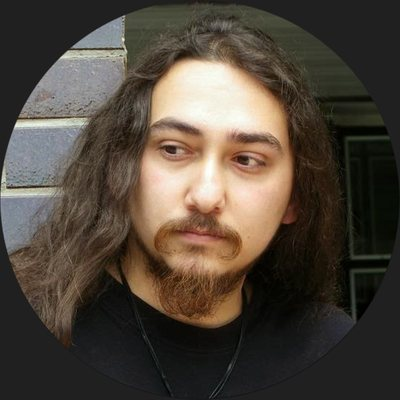

HAKAstronom · Öğretmen
Bilim Yazarı
Astronomi · Eğitim · Bilim iletişimi
H. Aziz Kayıhan
Astronomum, öğretmenim, bilim yazarıyım. Yirmi yılı aşkın süredir gökyüzünü anlatıyorum; kimi zaman bir sınıfta, kimi zaman bir gözlem şenliğinde teleskobun başında, kimi zaman da editörlüğünü yaptığım All About Space Türkiye ve How It Works Türkiye dergilerinin sayfalarında.
- EditörAll About Space Türkiye ve How It Works Türkiye
- IAU Ulusal Halka Erişim KoordinatörüUluslararası Astronomi Birliği, 2024'ten bu yana
- Astrofizik eğitmeniJohns Hopkins CTY yaz okulları
- 40 ülke, 77 ilve rota henüz bitmedi
Hakkımda
Temmuz 1986'da Denizli'de doğdum. Fotoğrafla da tiyatroyla da ilk orada, lise yıllarımda tanıştım. Sonra yolum Kayseri'ye düştü; Erciyes Üniversitesi'nde Astronomi ve Uzay Bilimleri okurken sahneden de hiç kopmadım.
Astronomiyi anlatmaya 2005'te başladım ve o günden beri ara vermedim. Okullarda, planetaryumlarda, TÜBİTAK'ın gözlem şenliklerinde, hatta gecenin bir yarısı dağ yollarında yürüyüşçülerle birlikte gökyüzüne bakarken... Bu yol beni uluslararası çalışmalara da taşıdı: Uzay Nesli Tavsiye Kurulu'nda (SGAC) önce Türkiye temsilcisi, ardından Ortadoğu bölge koordinatörü oldum. 2024'ten bu yana da Uluslararası Astronomi Birliği'nin (IAU) Türkiye Ulusal Halka Erişim Koordinatörüyüm. Öğrencilerle birlikte asteroit avına çıktığımız Asteroit Kâşifi ise bu yolun en sevdiğim duraklarından biri.
Bugünlerde Antalya'dayım. Antalya Sınav Koleji'nde astronomi ve İngilizce derslerine giriyorum, yazları ise Johns Hopkins Üniversitesi'nin CTY programında lise öğrencilerine astrofizik anlatıyorum. 2020'den beri de serbest çalışan bir bilim yazarı ve editörüm; All About Space Türkiye ve How It Works Türkiye'nin her sayısında emeğim var.
Öğrenciliği de bırakmış değilim. Akdeniz Üniversitesi Uzay Bilimleri ve Teknolojileri bölümünde yüksek lisansıma devam ederken, bir yandan da Anadolu Üniversitesi'nde medya ve iletişim ön lisansı okuyorum.
Geriye kalan zamanımı bir kaya duvarında, bir patikada ya da bisikletin üstünde geçiriyorum. Okuduğumdan çok yazıyorum; 2007'de açtığım blogum hâlâ ayakta. Son göz ağrım ise fotoğraflarıma kısa İngilizce hikâyelerin eşlik ettiği Tides in Times.
Özgeçmiş
Bugün
- Editör ve bilim yazarıAll About Space Türkiye · How It Works Türkiye2020'den beri
- Astronomi ve İngilizce öğretmeniAntalya Sınav Koleji2017–2021 ve 2024'ten beri
- Astrofizik eğitmeniJohns Hopkins University CTY, ABD2018'den beri yaz okulları
- Ulusal Halka Erişim KoordinatörüUluslararası Astronomi Birliği (IAU)2024'ten beri
Bilim iletişimi
- Sunucu ve içerik üreticisiAhtapotAstronomi videoları, canlı yayınlar ve podcast'ler, 2020'den beri
- Kurucu ve koordinatörAsteroit KâşifiIASC iş birliğiyle öğrencilere yönelik ulusal asteroit arama kampanyaları, 2017'den beri
- Uzman astronomTÜBİTAK Ulusal Gökyüzü Gözlem Şenliği · TÜBİTAK Ulusal Gözlemevi2013–2018 ve 2021–2022
- Ortadoğu Bölge KoordinatörüUzay Nesli Tavsiye Kurulu (SGAC)2010–2015; öncesinde Türkiye temsilcisi
Ödüller ve başarılar
- Vatikan Gözlemevi Yaz Okulu bursuVatikan Gözlemevi2014; SuperVOSS 2019 (kısmi)
- Yer'e yakın asteroit doğrulamaları2012 PA20, 2012 QD10 ve 2012 QU142012
- En İyi Poster Ödülü18. Ulusal Astronomi Kongresi, Türk Astronomi Derneği2012
- Genç Lider ÖdülüSpace Generation Congress, SGAC2011; aynı yıl IAC 2011'de genel panel konuşmacısı ve Uluslararası Astronotik Kongresi'nin ilk Türk panel konuşmacısı
Eğitim
- Yüksek lisans, Uzay Bilimleri ve TeknolojileriAkdeniz ÜniversitesiDevam ediyor
- Ön lisans, Medya ve İletişimAnadolu ÜniversitesiDevam ediyor
- Lisans, Astronomi ve Uzay BilimleriErciyes Üniversitesi
- LiseTürk Eğitim Vakfı Anadolu Lisesi, Denizli
Seçili yayınlar
- 2024Problems Caused by Incorrectly Translated Astronomical Terms and Standardization of Turkish Astronomical TermsKayıhan H.A., Çoban S. · 23. Ulusal Astronomi ve Uzay Bilimleri Kongresi, İstanbul
- 2022Detailed Information Regarding 21 Provisional Asteroid Discoveries from TurkeyKayıhan H.A. ve ark. · 22. Ulusal Astronomi ve Uzay Bilimleri Kongresi, İzmir
- 2020Troubles on Applying the Astronomy Course Contents for Elementary, Middle and High SchoolsKayıhan H.A., Yıldız S. · Turkish Journal of Astronomy and Astrophysics
- 2013Space for Humanitarian Relief: The Centre for Responsive Information for Safety and Security (CRISIS)Findlay R., Kayıhan H.A. ve ark. · 64. Uluslararası Astronotik Kongresi, Pekin
2008'den bu yana ulusal ve uluslararası kongre ve dergilerde 23 bildiri ve rapor. Tam liste, yenilenen özgeçmişimle birlikte burada olacak.
Yazılar
Hayat
Kaya tırmanışı ve bouldering
Salonda bouldering, fırsat buldukça doğada kaya. Bir rotayı sonunda çözmenin keyfi bambaşka.
Trekking
Türkiye Dağcılık Federasyonu sertifikalı trekking lideriyim. Gece yürüyüşlerinde yürüyüşçülerle birlikte gökyüzüne de bakıyoruz.
Doğada
Kamp kuruyor, kanoyla kürek çekiyor, fırsat buldukça denize giriyorum. Şehrin ışıklarından kaçmak için her bahane geçerli; bir çadır ve karanlık bir gökyüzü yeter de artar.
Bisiklet
Neredeyse otuz yıldır hayatımda; uzun yıllar en sadık ulaşım aracım oldu. Pedal çevirirken yanımda çoğu zaman aksiyon kameram oluyor.
Fotoğraf
Dijital, analog ve giderek daha çok telefonla çekiyorum. @tidesintimes'taki hikâyelerin bir kısmı da cebimden çıkan karelerden doğuyor.
Tiyatro
Lisede Denizli'de başladım, üniversitede Kayseri'de sürdürdüm. Yakında yeniden sahneye dönmeyi planlıyorum.
Sinema, dizi ve oyun
İzlediğim her şeyin kaydı Trakt'ta. Boş bir akşam bulursam da Steam'de bir oyunun başındayım.
Seyahat
Şimdiye kadar 40 ülke gördüm; çoğunun kapısını astronomi açtı. Türkiye'de ise 81 ilin 77'sini gezdim; kalan dördünü de yakında tamamlamayı umuyorum.
İletişim
Bir soru, bir iş birliği önerisi ya da yalnızca bir merhaba için yazabilirsiniz.
Ahtapot